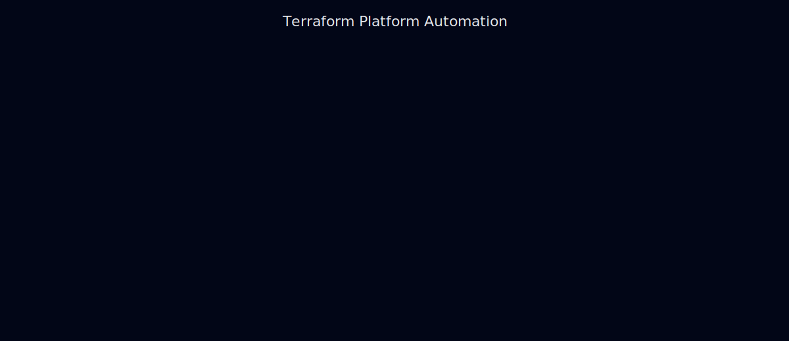

Platform Engineering Projects
These projects represent an end-to-end platform lifecycle — from
foundational infrastructure and networking, through automation
and runtime platforms, to observability, reliability, and
continuous improvement.
1. Foundational Infrastructure
VMware vCenter Platform Modernization
Enterprise-scale virtualization modernization focused on risk
reduction, operational consistency, and lifecycle management.
View Project
Cloud Migration & Network Architecture
Hybrid cloud migration reference emphasizing network segmentation,
phased transitions, and secure connectivity.
View Project
2. Platform & Automation

Terraform Platform Automation
Infrastructure-as-Code platform enabling consistent,
repeatable, and auditable provisioning across environments.
View Project
Kubernetes Platform Automation
Kubernetes platform engineering with clear separation between
platform services and application workloads.
View Project
3. Delivery & Reliability
Enterprise CI/CD Platform
Platform-level CI/CD enablement focused on standardization,
governance, and safe delivery at scale.
View Project
Observability & Reliability (SRE)
SRE practices covering SLIs/SLOs, error budgets, alerting,
incident response, and continuous learning.
View Project
All projects are reference architectures derived from real-world
enterprise experience. Diagrams and descriptions are intentionally
sanitized and generalized to avoid disclosure of proprietary systems.